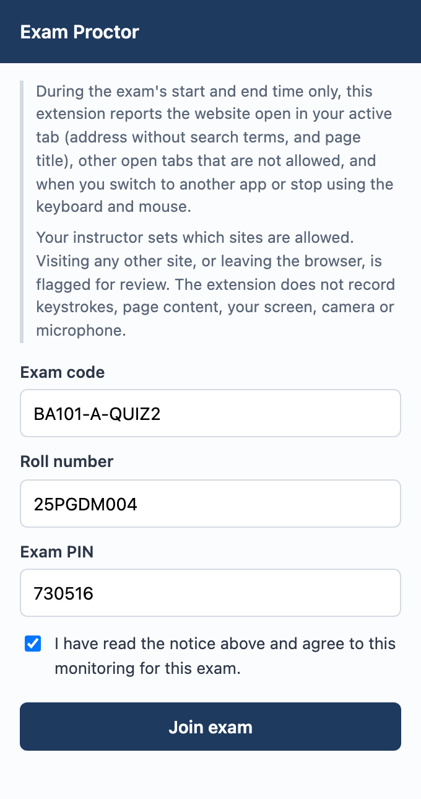
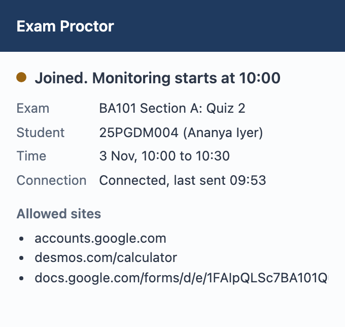
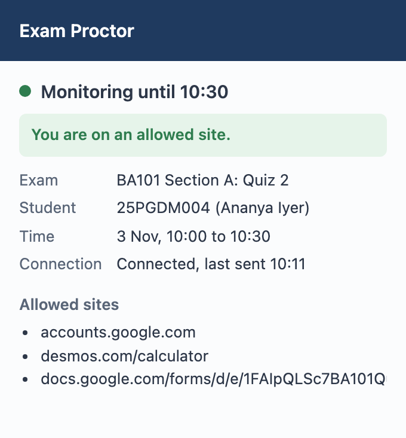
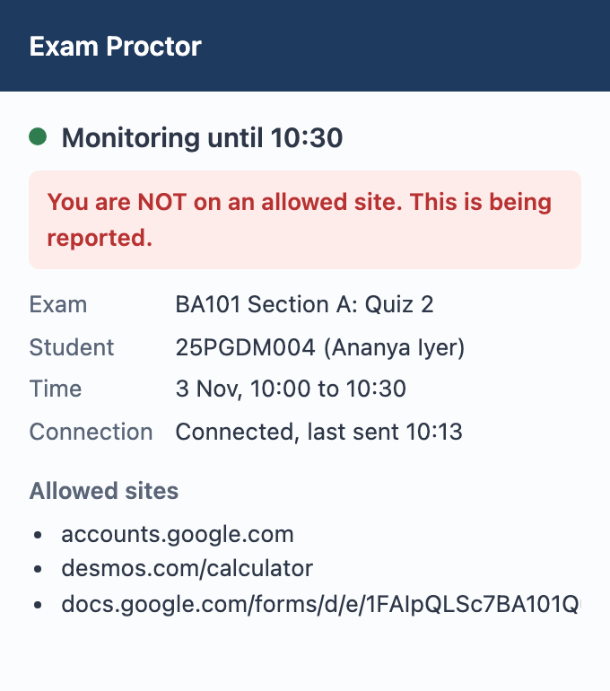
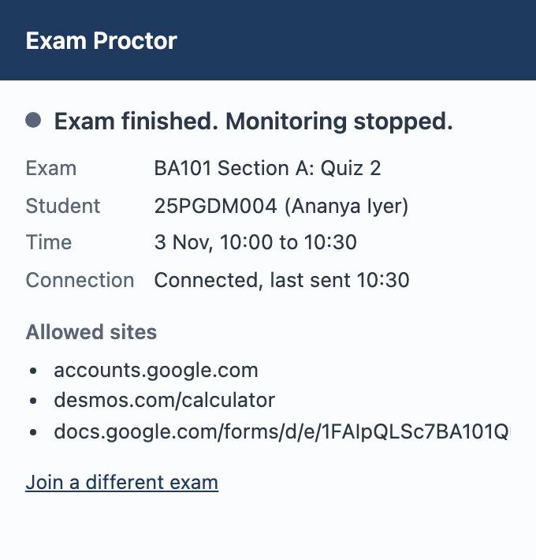

Exam Proctor: Student Guide
For online tests monitored with the Exam Proctor Chrome extension
Some of your online tests use Exam Proctor, a Chrome extension. For each test, your instructor chooses which websites you may use. If you open any other site, or switch to another app, you get a warning and your instructor is told. Install it once (5 minutes); after that, joining a test takes 30 seconds.
| Your instructor gives you | The test code and the list of allowed sites (in advance), and the PIN (at the start of the test) |
| You need | A laptop with Google Chrome, internet, and the extension installed beforehand |
| Roll number | Type it exactly as it appears in the class list |
Records are deleted 90 days after each test. A person reviews every flag; nothing is decided automatically. Privacy policy: exam-proctor-rhbo.onrender.com/privacy. If you do not wish to be monitored, or cannot use Chrome, tell your instructor before the test.
https://chromewebstore.google.com/detail/jheooojginplgillkdegkhlgblcmoimd

| Icon label | Meaning | What to do |
|---|---|---|
| ON | Monitoring is running and you are on an allowed site | Carry on |
| ! | You are on a site that is not allowed, or outside Chrome | Go back to an allowed site straight away |
| No label | Monitoring is not running (before the start or after the end) | Nothing |



You should see: "Exam finished. Monitoring stopped." The icon label disappears and nothing more is recorded.
Keep the extension for your next test. Never remove or disable it during a test: that is reported to your instructor. If you want to remove it, wait until the test has ended, then right-click the icon and choose Remove from Chrome.
| You see | What to do |
|---|---|
| "Cannot reach the exam server" | Check your internet. The server may be waking up: wait one minute and try again. |
| "No exam with this code" | Check the code your instructor gave you. |
| "Incorrect exam PIN" | Re-type the PIN carefully; letters must match in capitals or small letters. |
| "Not on the list for this exam" | Check your roll number. If it is right, tell your instructor. |
| The ! label on a page you think is allowed | Compare the address bar with the allowed list in the popup, then tell the invigilator. |
| Chrome crashed or the laptop restarted | Reopen Chrome, click the icon and join again with the same details. Nothing is lost. |
| Anything else | Tell your instructor or invigilator straight away, with a screenshot if you can. |